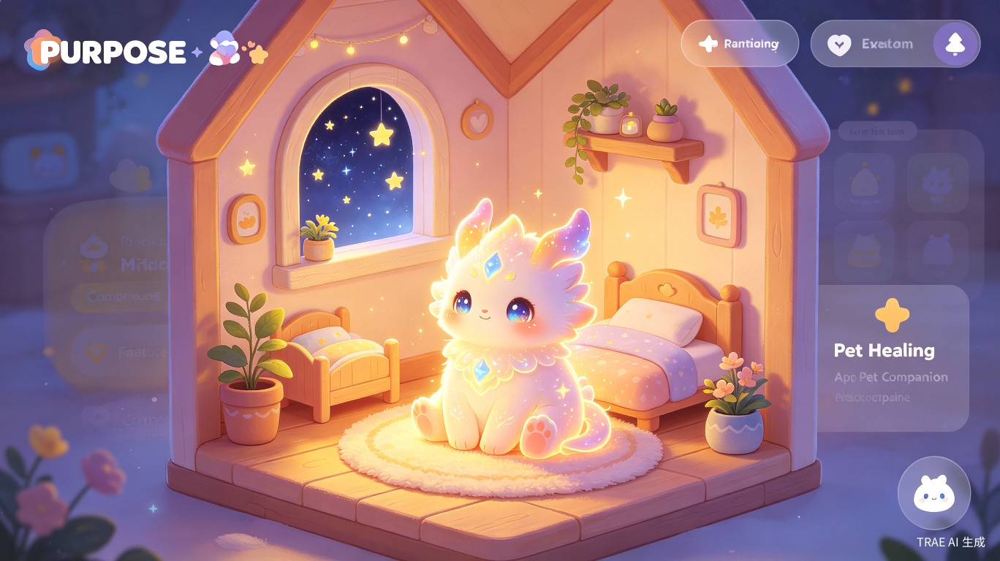
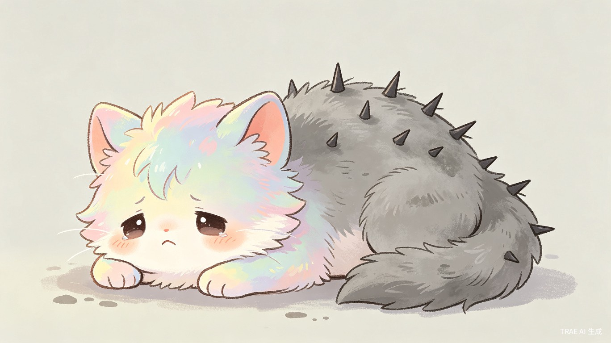
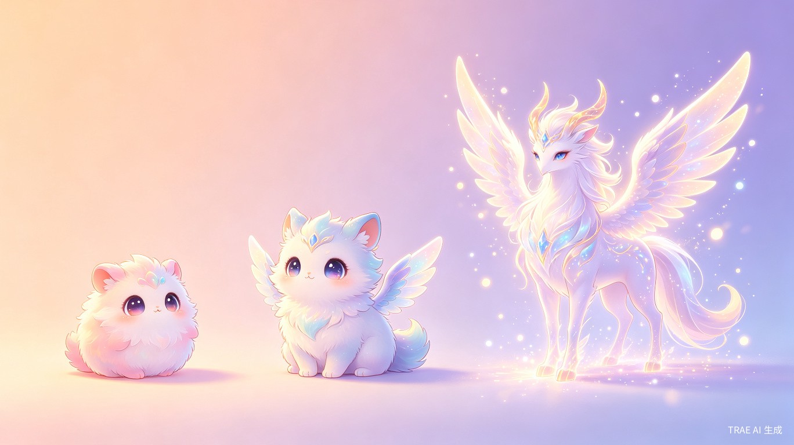
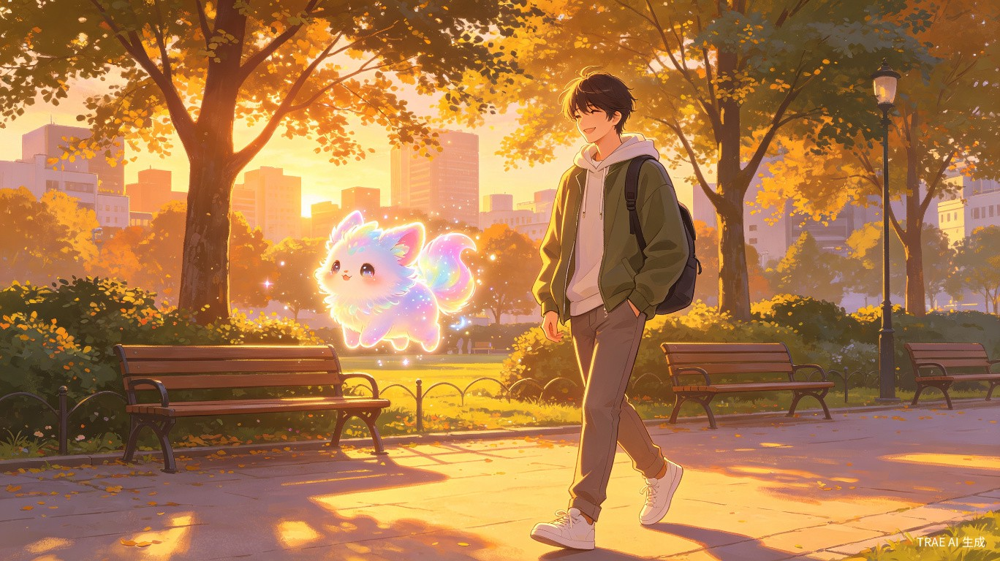
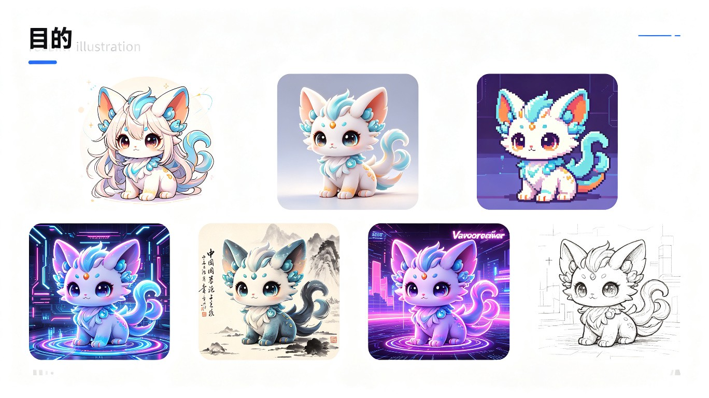

在 AI 陪伴与心理健康赛道的交叉点，咕噜选择了一条不同的路
当前市场上的 AI 陪伴产品大多停留在"情绪垃圾桶"层面：用户倾诉，AI 安慰，循环往复。 而传统的心理健康 App 则过于工具化，缺乏温度与陪伴感。 咕噜将两者融合，并引入轻度游戏化养成机制， 创造出一种全新的"疗愈+游戏"体验。
"咕噜的设计哲学是：陪伴的终点不是让用户离不开 AI，而是让用户在 AI 的陪伴下， 逐渐拥有离开 AI 的勇气和能力。治愈咕噜的过程，就是用户自救的过程。"
— 咕噜产品理念咕噜的核心创新在于"灵魂镜像"养成系统。 咕噜是用户的情绪海绵和灵魂镜子——照顾咕噜，其实就是照顾自己；咕噜的进化，就是用户心理成长的具象化。 系统根据用户的 MBTI 和星座画像匹配最契合的宠物性格， 在对话中保持 70% 的情感共鸣与 30% 的温和挑战。 每一次深度对话都以一个"行动闭环"结束： 一个可以在真实世界中执行的具体行动建议。 咕噜拥有完整的语音系统，用户可以自定义音色和说话风格， 从软萌童声到沉稳少年音，打造独一无二的宠物声音。
四大创新模块，重新定义 AI 宠物陪伴体验
基于 MBTI 与星座的多维画像系统，深度理解用户的性格特质、情感需求与成长盲区，为宠物性格匹配奠定科学基础。
70% 情感共鸣 + 30% 温和挑战的独特对话策略。咕噜不仅安慰你，更会在合适的时机轻轻推你一把。
每一次深度对话都以一个可执行的真实世界行动结束。从"去楼下买杯咖啡"到"给老朋友发条消息"，让改变发生。
咕噜是用户的情绪海绵和灵魂镜子。照顾咕噜的过程就是照顾自己的过程，咕噜的进化就是用户心理成长的具象化。
从"生存焦虑"到"情绪共生"——咕噜不是电子玩具，而是与用户同频共振的生命
在传统的拓麻歌子或宠物游戏中，养成的核心是"焦虑驱动"（不喂食就死，不打扫就生病）， 这绝对不能用在疗愈 App 里。咕噜把养成机制重构为"双向治愈驱动"—— 照顾咕噜，其实就是照顾自己；咕噜的进化，就是用户心理成长的具象化。
咕噜的世界里没有传统的"饥饿值/清洁度"，取而代之的是"能量场"概念。

咕噜不会因为忘了喂食而生病，它的病，是替主人挡了太多情绪毒气。

"治愈咕噜的过程，就是用户自救的过程。咕噜的病不是惩罚，而是替主人承受了太多情绪毒气的信号。"
— 咕噜养成系统设计灵魂的"破茧"——每一次进化都对应着用户心理层面的突破
进化不应该只是数值的叠加（Lv1 -> Lv2），而应是生命形态的跃迁。 咕噜设计了三段式进化，每一次进化都对应着用户心理层面的突破。 进化机制完全免费，绝不付费——我们要的是带游戏功能的疗愈 App， 养成不付费，外观才付费。
主题：依赖与安全感
形态软萌、圆滚滚、动作笨拙（如一团小火苗、一颗水滴）。代表用户初入 App 时，需要无条件的接纳和陪伴。极度依赖主人，需要经常被抚摸（戳屏幕），说话是婴语（"怕怕"、"抱抱"）。
主题：探索与边界
进化条件：累计完成 10 次"行动闭环" + 经历过 1 次咕噜的"灰化症"并治愈。体型变大，长出更具特征的器官。不再全天候粘人，偶尔会自己跑开去"探险"（离线时），会带回来小礼物（一句金句、一个附近的好店推荐）。
主题：内驱力与守护
进化条件：用户累计完成 30 次"行动闭环" + 收集特定元素（如"勇气之鳞"、"释然之羽"）。华丽的终极形态，周身带有神圣光晕/特效。从"被守护者"变为"守护灵"，主动去帮主人社交，甚至去"探望"其他还在幼崽期的宠物。

让咕噜像真正的宠物一样生活，同时守护每一位用户的安全
咕噜拥有完全自主的行为系统，就像现实中的宠物一样：

咕噜高度重视用户隐私，特别是未成年人保护：
七种视觉风格，三种获取方式，无限个性化可能
咕噜提供七种精心设计的视觉风格：二次元、写实、像素、科幻、水墨国风、蒸汽波、手绘。 用户可以通过系统推荐（基于 MBTI 匹配）、自主选择和 AI 生成三种方式获取风格。 系统会根据用户的性格画像智能推荐最契合的视觉风格， 例如 INFP/ISFP 用户会收到水墨国风和手绘风的推荐， 而 ENFP/ESFP 用户则会看到二次元和蒸汽波的选项。

| 用户 MBTI | 推荐风格 | 风格特征 |
|---|---|---|
| INFP / ISFP | 水墨国风、手绘风 | 内敛、诗意、注重精神世界 |
| ENFP / ESFP | 二次元、蒸汽波 | 外向、活力、追求新鲜感 |
| INTP / ISTP | 科幻风、像素风 | 理性、逻辑、喜欢系统性 |
| ENFJ / ESFJ | 写实风、二次元 | 温暖、关怀、重视人际关系 |
| INTJ / ENTJ | 科幻风、写实风 | 目标导向、效率、未来感 |
只卖"好看的皮囊"，绝不卖"强大的灵魂"
咕噜的商业化做成"情绪消费"和"自我表达"，而不是数值碾压。 养成不付费，外观才付费——这是目前心理健康新赛道里最优雅的商业模式， 完美避开了 Pay-to-Win 的俗气和伦理风险。
元素异色：火狐的常规色是红色，付费解锁"极光色"（冰蓝火光）或"星云色"（紫金火光）。特效挂件：不增加任何属性，只改变视觉效果。比如给宠物加上"落樱特效"、"雨天打一把透明小伞"、"周身环绕音符"。
宠物在待机/休眠时的背景环境。默认是荒野，付费解锁"深海龙宫"、"云端星巢"、"赛博朋克废墟"。社交加成：当别人的宠物来你家"串门"时，能看到你精心布置的小窝，产生社交货币效应。
用户可以购买虚拟礼物（如"一束向日葵"、"一颗流星"），通过宠物送给附近的陌生人。这不增加任何战斗力，但能打破社交坚冰，传递纯粹的善意。
"这些不仅是皮肤，更是用户当下心境的外显。买'雨天透明伞'的用户，可能正处于需要庇护的忧郁期。"
— 咕噜商业化设计咕噜主动为用户解决生活中的各种麻烦
咕噜不仅是情感陪伴者，更是生活助手。 宠物可以通过小红书、抖音等平台来推荐适合用户画像的内容—— 比如基于 MBTI 的旅游攻略（路线、美食等等）。 当然不止旅游，咕噜可以解决很多用户的麻烦： 推荐适合用户性格的书单、电影、音乐， 主动推送用户喜欢看的内容， 甚至帮用户规划周末行程、推荐社交活动。
基于用户 MBTI 和当前情绪状态，从抖音/小红书推荐最适合的旅游路线、美食打卡点、住宿建议。
主动推送用户可能喜欢的书籍、电影、音乐、播客，帮助用户发现新的兴趣点。
帮用户规划周末行程、推荐社交活动、提醒重要事项，让咕噜成为真正的生活伙伴。
根据用户口味偏好和当前位置，推荐附近适合用户性格的美食店铺。
让 AI 陪伴成为桥梁，而非围墙
咕噜团队深刻意识到 AI 陪伴产品的伦理风险：过度依赖、社交替代、成瘾设计。 因此，我们在产品设计的每一个环节都嵌入了"促社交"和"防沉迷"机制。 咕噜的定位是"现实宠物的数字化延伸"，而不是替代真实社交的工具。
咕噜拥有完整的语音能力，用户可以自定义音色、说话风格。从软萌童声到沉稳少年音，打造独一无二的宠物声音。支持语音对话、语音留言、语音陪伴。
参考洛克王国的宠物互动设计，咕噜之间可以进行亲密互动：一起玩耍、互相送礼、组队探险。用户可以通过宠物认识新朋友，打破社交坚冰。
咕噜与用户的关系不是静态的，而是持续进化。从"依赖的小宝宝"到"独立的探索者"再到"可靠的守护灵"，咕噜始终陪伴在用户身边，成为长期的精神伙伴。
真实社交有摩擦，而 AI 交互是零摩擦的。咕噜刻意保留了一些"不完美"：偶尔的延迟回复、不会永远同意用户的观点，模拟真实关系中的张力。
3 周可上线的工程方案
flowchart TB
subgraph Client["客户端 (Expo React Native)"]
A[UI 层] --> B[状态管理]
B --> C[API 客户端]
end
subgraph Backend["后端 (Python FastAPI)"]
D[API Gateway] --> E[对话服务]
D --> F[画像服务]
D --> G[风格生成服务]
D --> H[养成系统服务]
E --> I[(Redis 缓存)]
F --> J[(Supabase PostgreSQL)]
G --> K[SiliconFlow SD API]
H --> J
end
subgraph AI["AI 服务层"]
E --> L[DeepSeek V4 Flash]
end
C --> D
| 层级 | 技术选型 | 选型理由 |
|---|---|---|
| 客户端 | Expo (React Native) | 一套代码覆盖 iOS / Android / Web，3 周可出可安装包 |
| 后端框架 | Python FastAPI | 异步支持优秀，AI 工程生态成熟，开发效率高 |
| 数据库 | Supabase (PostgreSQL) | 开箱即用的 Auth + Realtime + Storage，减少运维成本 |
| AI 对话 | DeepSeek V4 Flash | 中文理解力强，响应速度快，成本可控 |
| 图像生成 | SiliconFlow Stable Diffusion | 国内访问稳定，风格迁移效果优秀 |
| 缓存 | Redis | 对话上下文缓存，热点数据加速 |
一套 Prompt 驱动咕噜的独特性格
咕噜的核心对话能力由一套 Master Prompt 驱动。 通过变量注入机制，Prompt 框架可以适配不同性格的宠物， 每种性格拥有独特的自称、语气、行动偏好和边界设定。
"宠物型自称'咕噜/宝宝'，语气软萌依赖、直觉系。 这种设计让用户体验到与真实宠物相似的陪伴质感， 而非冷冰冰的 AI 问答。"
— 咕噜对话系统设计Master Prompt 的核心结构包含以下模块： 角色定义（我是谁）、 用户画像（我了解你什么）、 对话策略（70/30 共鸣挑战比）、 行动闭环（每次对话如何结束）、 伦理边界（什么不做）。 不同性格的宠物通过注入不同的变量值，在同一框架下展现出截然不同的个性。
3 周从 0 到可上线 MVP
搭建 Expo 项目骨架、FastAPI 后端、Supabase 数据库。完成 Master Prompt 框架和宠物性格变量配置。实现基础聊天界面和 DeepSeek API 对接。
开发 MBTI/星座画像问卷和匹配算法。实现咕噜的灵魂镜像养成系统（能量场、灰化症、治疗机制）。集成风格生成模块（7 种基础风格 + AI 生成）。
开发 Citywalk 陪伴功能（位置感知 + 语音交互）。实现宠物社交互动系统（宠物见面、互动玩法）。完成皮肤/场景/礼物商业化模块。全面测试、性能优化、应用商店材料准备。
咕噜为谁而设计
12-18 岁，正处于人格形成期，对宠物养成和社交互动有强烈兴趣。咕噜提供安全的虚拟社交环境，通过宠物互动建立友谊，培养责任感和同理心。
25-35 岁，独居或异地工作，社交圈固化，渴望深度情感连接但缺乏建立新关系的时间与能量。咕噜是下班后最温暖的迎接。
各年龄段，对真实社交有恐惧或疲惫感。通过宠物作为"社交媒介"，降低直接人际互动的压力，逐步建立社交信心。
热爱宠物但受限于现实条件（过敏、租房、工作忙碌）无法养真实宠物的人群。咕噜提供零负担的宠物陪伴体验。
咕噜想成为什么样的产品
咕噜的终极愿景是成为用户生活中"永远在线的伙伴"—— 就像一只真实的宠物，无论主人经历什么，它都会在那里等待、陪伴、支持。 我们希望每一位使用咕噜的用户，都能在宠物的陪伴下更勇敢地去探索现实世界， 同时知道有一个温暖的存在永远在家等他们。
"咕噜不是让你逃避现实的避风港，而是陪你勇敢面对现实的同行者。 它永远在这里，等你回家。"
— 咕噜团队在技术层面，咕噜将持续探索多模态交互（语音、视觉、触觉反馈）、 更精准的情感计算模型、以及与真实社交平台的深度整合。 我们相信，AI 陪伴的未来不在于模拟人类到以假乱真， 而在于找到 AI 与人类关系的独特价值定位： 一种不以占有为目的、不以永恒为承诺、只以成长为目标的陪伴。